|
4-3-3
|
Mexico | 2 | - | 0 | Ecuador |
4-4-2
|
| HT 2-0 | ||||||
|
FIFA World CupWednesday 1 July 2026
|
||||||
- Venue
- Mexico City Stadium
- Attendance
- 80,824
- Referee
- Slavko Vinčić
Goal22'
J. Quiñones
Assist: R. Alvarado
Goal31'
R. Jiménez
Assist: J. Quiñones
Substitution58'
G. Mora
B. Gutiérrez
Substitution73'
L. Romo
O. Vargas
Substitution74'
R. Jiménez
S. Giménez
- 2
Substitution80'
J. Quiñones
O. Pineda
R. Alvarado
I. Reyes
Whistle45+6'
45+6'
Yellow card45+1'
A. Franco
- 2
Substitution46'
J. Ordoñez
Á. Preciado
A. Franco
Y. Medina
Substitution59'
E. Valencia
K. Rodríguez
- 2
Substitution79'
J. Yeboah
J. Caicedo
N. Angulo
K. Páez
Yellow card90+3'
K. Páez
Red card90+5'
P. Hincapié
Yellow card90+9'
M. Caicedo
Mexico | |
|---|---|
Goalkeeper | |
| 1 | R. Rangel |
Defender | |
| 2 | J. Sánchez |
| 3 | C. Montes |
| 5 | J. Vásquez |
| 23 | J. Gallardo |
Midfielder | |
| 6 | É. Lira |
| 7 | L. Romo 73' |
| 19 | G. Mora 58' |
Forward | |
| 9 | R. Jiménez 31'74' |
| 16 | J. Quiñones 22'80' |
| 25 | R. Alvarado 80' |
Substitutes | |
| 11 | S. Giménez 74' |
| 15 | I. Reyes 80' |
| 17 | O. Pineda 80' |
| 18 | O. Vargas 73' |
| 26 | B. Gutiérrez 58' |
Ecuador | |
Goalkeeper | |
| 1 | H. Galíndez |
Defender | |
| 3 | P. Hincapié 90+5' |
| 4 | J. Ordoñez 46' |
| 6 | W. Pacho |
| 21 | A. Franco 45+1'46' |
Midfielder | |
| 9 | J. Yeboah 79' |
| 15 | P. Vite |
| 20 | N. Angulo 79' |
| 23 | M. Caicedo 90+9' |
Forward | |
| 13 | E. Valencia 59' |
| 19 | G. Plata |
Substitutes | |
| 10 | K. Páez 79'90+3' |
| 11 | K. Rodríguez 59' |
| 16 | J. Caicedo 79' |
| 17 | Á. Preciado 46' |
| 26 | Y. Medina 46' |


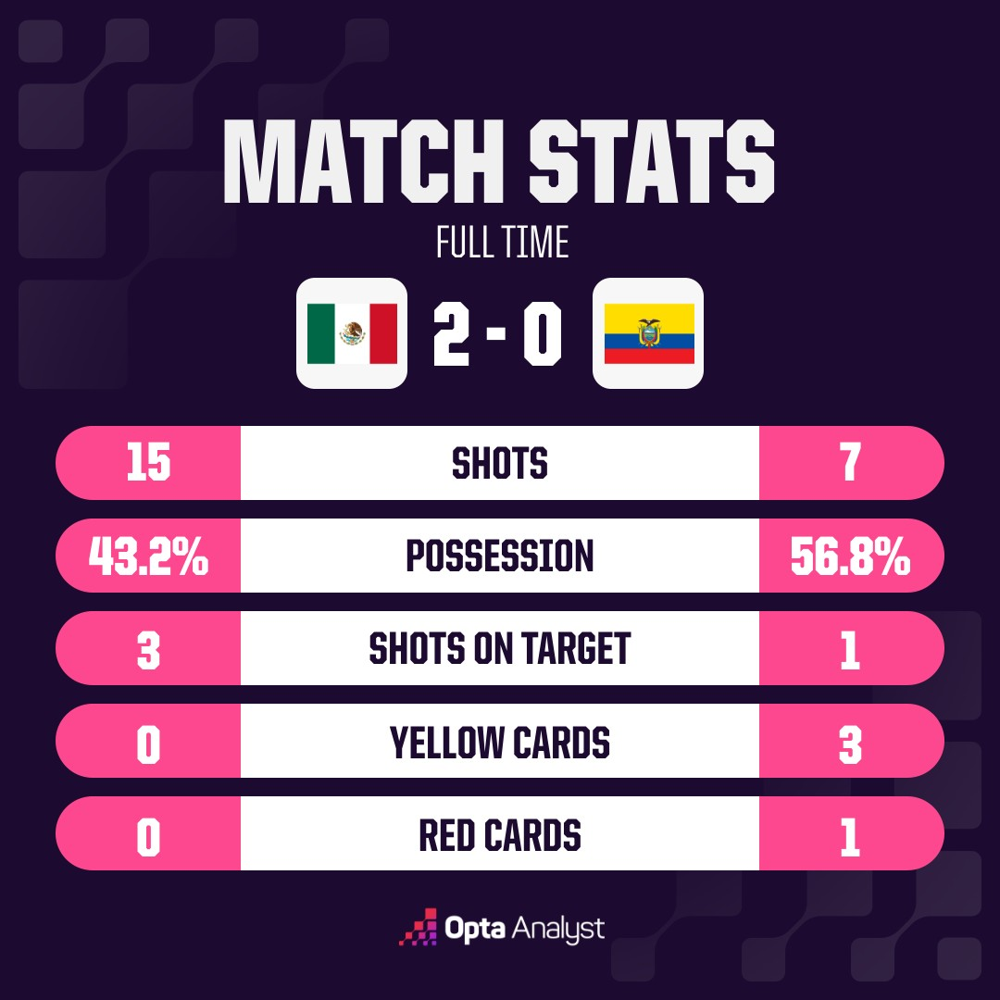
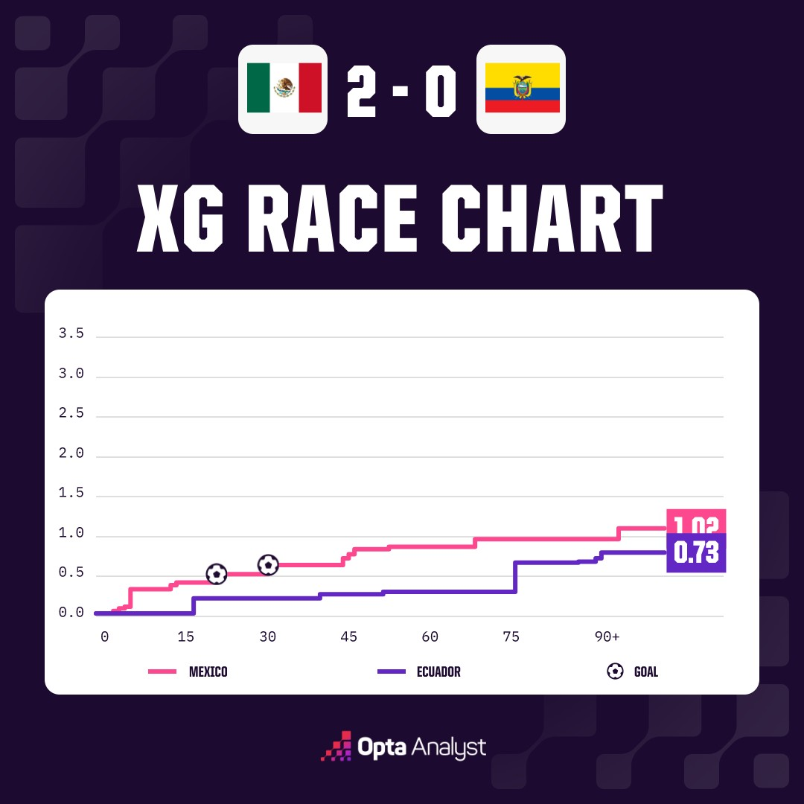
100'
Mexico have won their last 5 games in the FIFA World Cup, their longest winning streak in the competition (since at least 1965/1966).
100'
Mexico have kept a clean sheet in each of their last 4 games in the FIFA World Cup, a run of 420 minutes without conceding a goal.
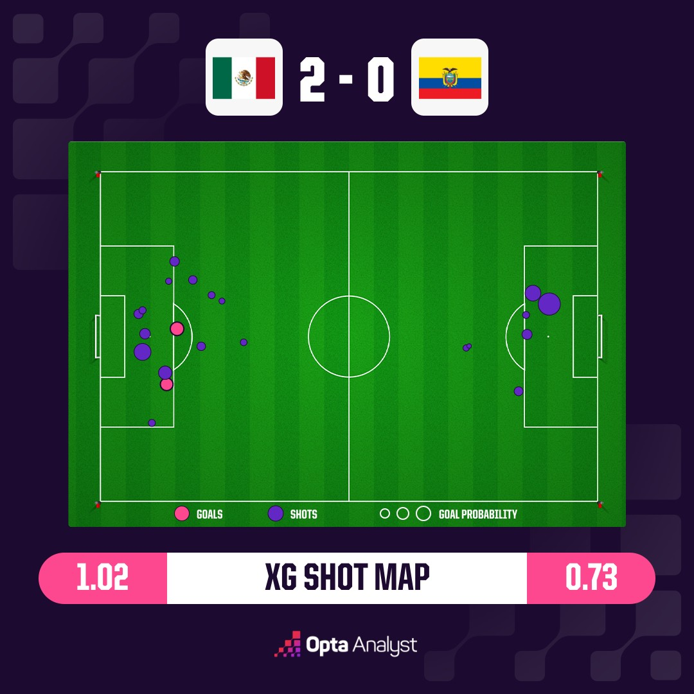
90+9'
That's it! The referee blows the whistle and we have reached full-time. The final score at Mexico City Stadium is Mexico 2-0 Ecuador.
90+9'
The referee goes to their pocket and pulls out a yellow card, which is brandished in the direction of Moisés Caicedo. Will they be able to avoid a second booking?
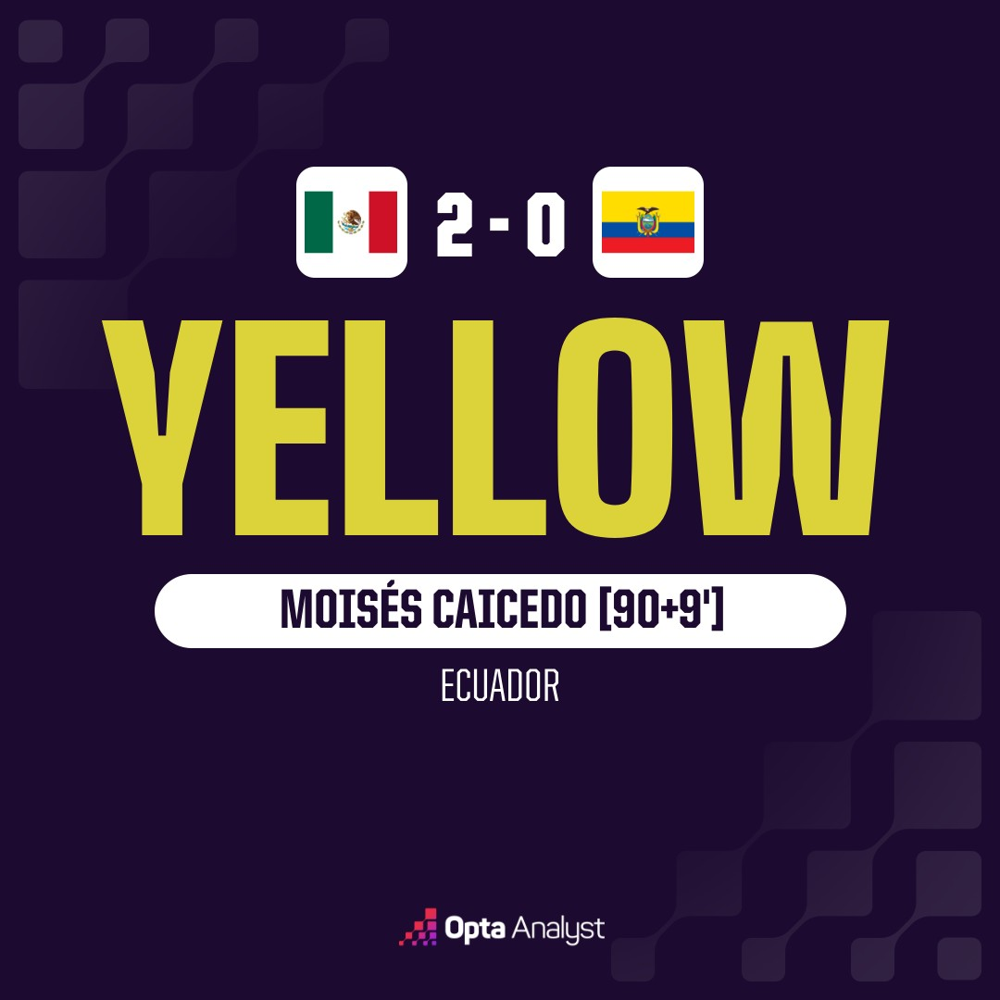
90+9'
A rash challenge from Moisés Caicedo, who sends Orbelín Pineda tumbling, giving Mexico a free-kick. It is not in a threatening position, but it gives them a chance to get back on the ball.
90+7'
Free-kick! A foul from Jordy Caicedo on César Montes. It is well away from Ecuador’s goal, so it is unlikely to result in a chance for Mexico.
90+7'
Santiago Giménez goes in on Pedro Vite and concedes a foul. The free-kick is not in a particularly dangerous area from Mexico’s viewpoint, though.
90+5'
Piero Hincapié has received a red card - Ecuador's first sending off in the 2026 FIFA World Cup , and their first since 25th June 2014 against France.
90+5'
RED CARD! Huge boost for Mexico, as they are now a player up after Ecuador see Piero Hincapié sent off. Mexico have the lead in the match and now a numerical advantage, so they are surely big favourites to hold on for the win.
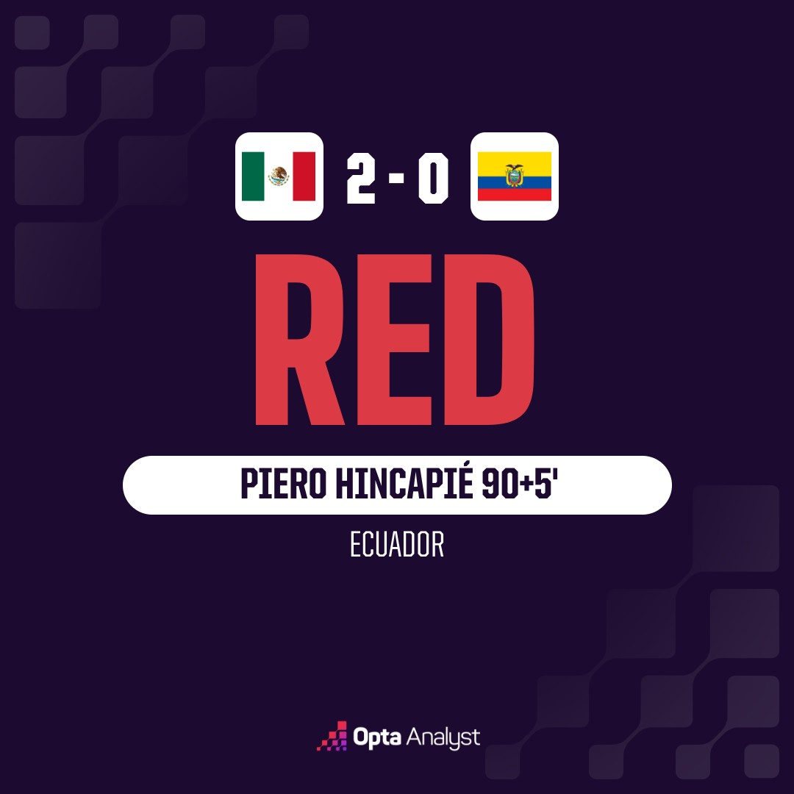
90+4'
VAR overturns the decision! The video official sees enough reason for the original call to be overturned, and so elects to intervene here.
90+4'
VAR is reviewing the incident. Will the decision stand, or will it be overturned?
90+3'
That is a booking for Kendry Páez, who has received their first yellow card. They are not happy with the decision, but it is done now, and they will have to be careful for the rest of this game.
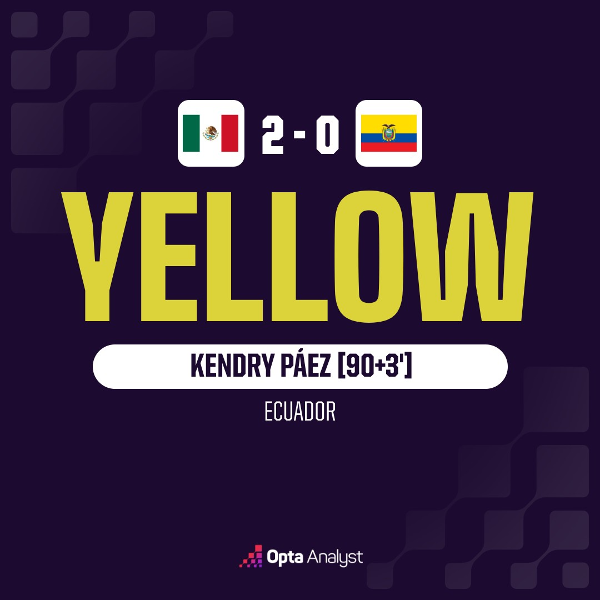
90+3'
A foul from Kendry Páez on Orbelín Pineda sees Mexico win a free-kick, but it is not in a dangerous position, so Ecuador should be confident they can defend it easily enough.
90+2'
MISS! The score remains 2-0, with Ecuador relieved after Mexico’s Orbelín Pineda goes for goal but sends their attempt off target. Not one to write home about, that one.
90+2'
It's all hands on deck for Mexico as they defend their lead, making a wave of critical blocks and clearances
89'
In the last 15 minutes, it is Ecuador who have dominated the ball, having seen 66.04% of the possession, yet they have not been able to go and turn that into a goal just yet, with their opponents standing firm.
89'
That might have been going in! A fantastic block from César Montes, who gets in the way of a goal-bound effort from Jordy Caicedo. Would the goalkeeper have been beaten? We will never know.
88'
MISS! The score remains 0-2, with Mexico relieved after Ecuador’s Yaimar Medina goes for goal but sends their attempt off target. Not one to write home about, that one.
86'
It's all hands on deck for Mexico as they defend their lead, making a wave of critical blocks and clearances
85'
A chance goes begging as Moisés Caicedo gets off a shot that does not hit the target. They might have done better with that one, but instead it is a goal-kick to Mexico.
85'
This game is certainly in a bit of a lull now, with neither team having had an attempt at goal in the past 10 minutes. It could do with something to spark it into life. Ecuador have had more possession during the quiet spell, but are yet to do much with it.
84'
Pedro Vite goes in on Santiago Giménez and concedes a foul. The free-kick is not in a particularly dangerous area from Ecuador’s viewpoint, though.
83'
A rash challenge from Jordy Caicedo, who sends Johan Vásquez tumbling, giving Mexico a free-kick. It is not in a threatening position, but it gives them a chance to get back on the ball.
81'
Free-kick! A foul from Jorge Sánchez on Gonzalo Plata. It is well away from Mexico’s goal, so it is unlikely to result in a chance for Ecuador.
80'
Substitution! Israel Reyes replaces Roberto Alvarado for Mexico as the manager shuffles the pack. Can Israel Reyes make an impression as this match continues?
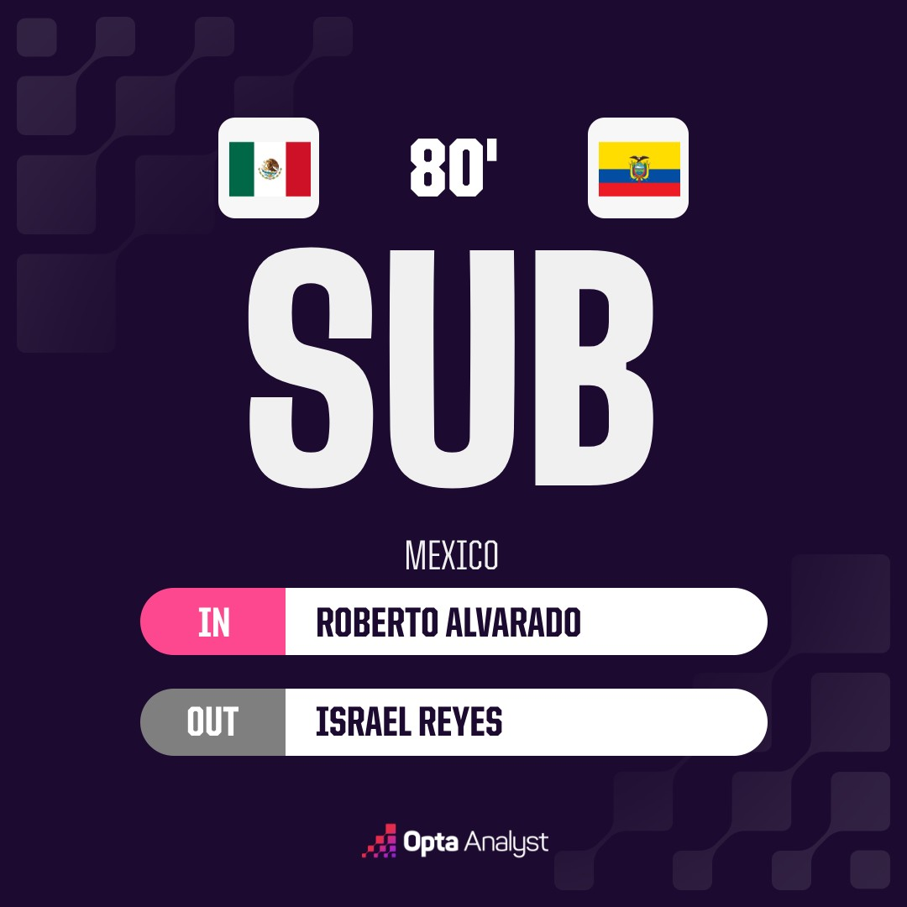
80'
Mexico are making a tactical change. Julián Quiñones is leaving the field and in their place comes Orbelín Pineda – we will soon see if this switch has the desired impact.
79'
Substitution! Kendry Páez replaces Nilson Angulo for Ecuador as the manager shuffles the pack. Can Kendry Páez make an impression as this match continues?
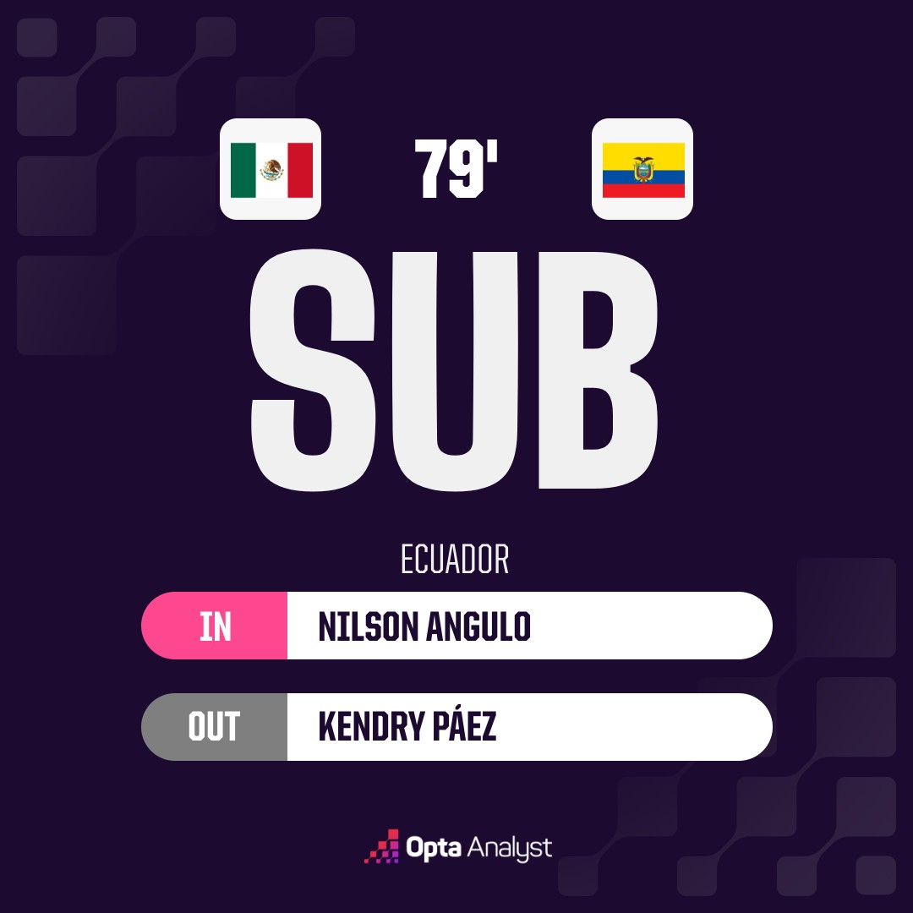
79'
Substitution! Jordy Caicedo replaces John Yeboah for Ecuador as the manager shuffles the pack. Can Jordy Caicedo make an impression as this match continues?
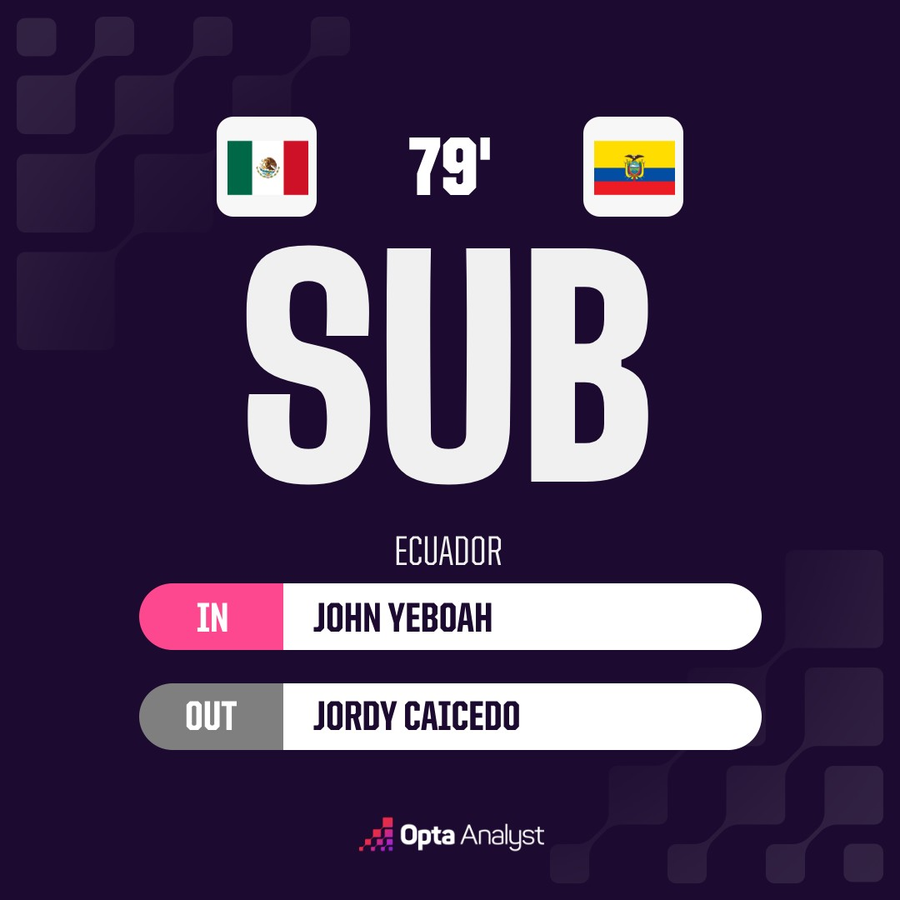
78'
A free-kick to Mexico, as Piero Hincapié goes in and fouls Santiago Giménez. However, Ecuador will not mind giving one away in this area too much, with plenty of distance to their goal.
77'
A free-kick to Mexico, as Kevin Rodríguez goes in and fouls Johan Vásquez. However, Ecuador will not mind giving one away in this area too much, with plenty of distance to their goal.
77'
It’s backs to the wall now — Mexico throwing everything into defending their advantage, with a flurry of crucial interventions.
76'
With 15 minutes of normal time remaining, it is Ecuador who have had more of the ball, with 55.68% compared to Mexico’s 44.32%.
74'
Ecuador will not get back into the match with finishing like that! A huge chance comes the way of Kevin Rodríguez but they are unable to beat the goalkeeper, so there remains a significant gap between the teams.
74'
In the last 15 minutes, it is Ecuador who have dominated the ball, having seen 74.47% of the possession, yet they have not been able to go and turn that into a goal just yet, with their opponents standing firm.
74'
A substitution for Mexico sees Raúl Jiménez replaced by Santiago Giménez. There does not appear to be any obvious sign of an injury, so that is a tactical switch.
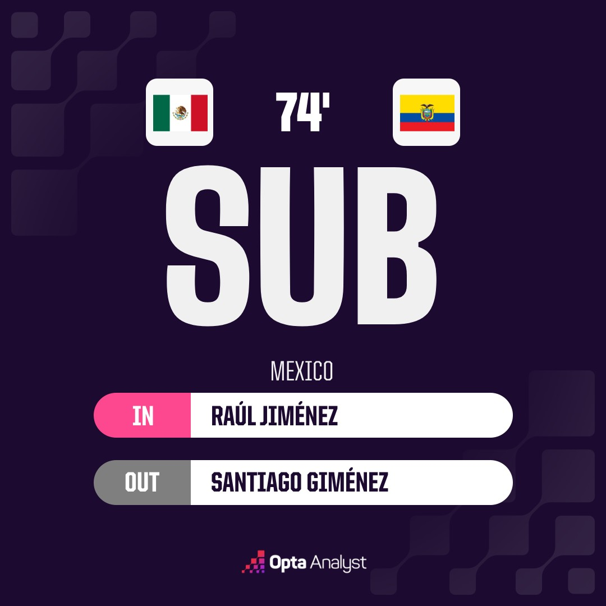
73'
Substitution! Obed Vargas replaces Luis Romo for Mexico as the manager shuffles the pack. Can Obed Vargas make an impression as this match continues?
67'
No luck! Johan Vásquez takes on a shot that, had they got it right, might have been set to test the goalkeeper, but instead it is sent off target and Ecuador come away unscathed.
67'
An opportunity for Mexico to extend their lead goes begging, as César Montes is unable to convert from a good opening. Will they live to regret that miss?
66'
Plenty of the ball in the last quarter-of-an-hour of this match for Ecuador, but Mexico have been able to hold them off with ease, with Ecuador having failed to even muster a shot at goal.
66'
This match is into the last 25 minutes now, and before it goes into the final stages, let’s check on the shots. There have been 15 in total – 3 from Ecuador, and 12 from Mexico. Of those attempts, 3 have hit the target – 1 from Ecuador and 2 from Mexico.
62'
It's all hands on deck for Mexico as they defend their lead, making a wave of critical blocks and clearances
62'
A lull in this match, as the teams prob and probe, but without much success. It has been 10 minutes since there was an attempt from either side, though Ecuador are seeing more of the ball, with 82 per cent possession to Mexico’s 18 per cent during that time.
61'
Free-kick! A foul from Raúl Jiménez on Willian Pacho. It is well away from Mexico’s goal, so it is unlikely to result in a chance for Ecuador.
59'
A free-kick to Ecuador, as Brian Gutiérrez goes in and fouls Piero Hincapié. However, Mexico will not mind giving one away in this area too much, with plenty of distance to their goal.
59'
Enner Valencia’s match is over as Ecuador decide to make a substitution. Kevin Rodríguez enters the field in what looks like a tactical change.
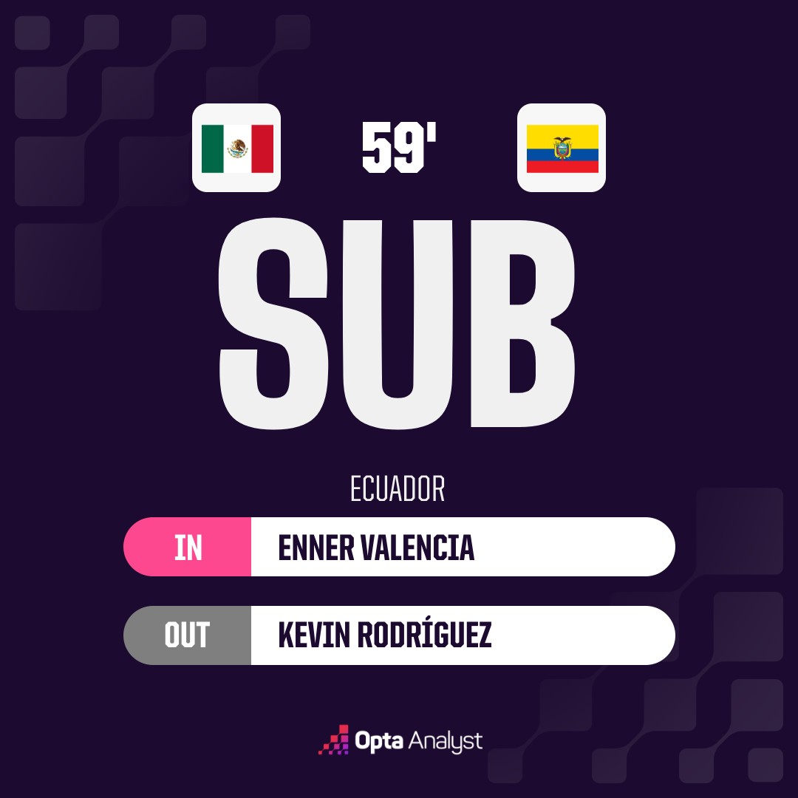
58'
The Mexico manager is looking to the substitutes’ bench, bringing on Brian Gutiérrez in place of Gilberto Mora. Will the change make a difference? Let’s find out!
58'
Free-kick! A foul from Piero Hincapié on Gilberto Mora. It is well away from Ecuador’s goal, so it is unlikely to result in a chance for Mexico.
57'
Ecuador have had plenty of the ball in the last 15 minutes, with 65.08% possession compared to just 34.92 % for their opponents. However, there’s not been any goal to come from that possessional dominance just yet.
53'
That’s offside! A switched-on defensive line from Mexico, as they step up at the right time to catch Enner Valencia offside, and the assistant referee’s flag is up.
52'
Despite trailing, Ecuador are showing real defensive grit, digging in and stopping further damage as they try to build a platform.
52'
Great block from Piero Hincapié, as they get in the way of an attempt from Gilberto Mora that might have been set to cause the goalkeeper some problems. Solid defending from the Ecuador player.
51'
That is a disappointing effort from Pedro Vite, who went for glory but got their attempt wrong, and the shot sailed off target. A frustrating moment for Ecuador.
49'
Free-kick! A foul from Jesús Gallardo on John Yeboah. It is well away from Mexico’s goal, so it is unlikely to result in a chance for Ecuador.
48'
A free-kick in a dangerous position now for Mexico, after a foul from Yaimar Medina on Gilberto Mora. Can Mexico make Ecuador pay for that rashness from Yaimar Medina?
46'
MISS! The score remains 2-0, with Ecuador relieved after Mexico’s Roberto Alvarado goes for goal but sends their attempt off target. Not one to write home about, that one.
46'
Ecuador are making a tactical change. Joel Ordoñez is leaving the field and in their place comes Ángelo Preciado – we will soon see if this switch has the desired impact.
46'
Ecuador are making a tactical change. Alan Franco is leaving the field and in their place comes Yaimar Medina – we will soon see if this switch has the desired impact.
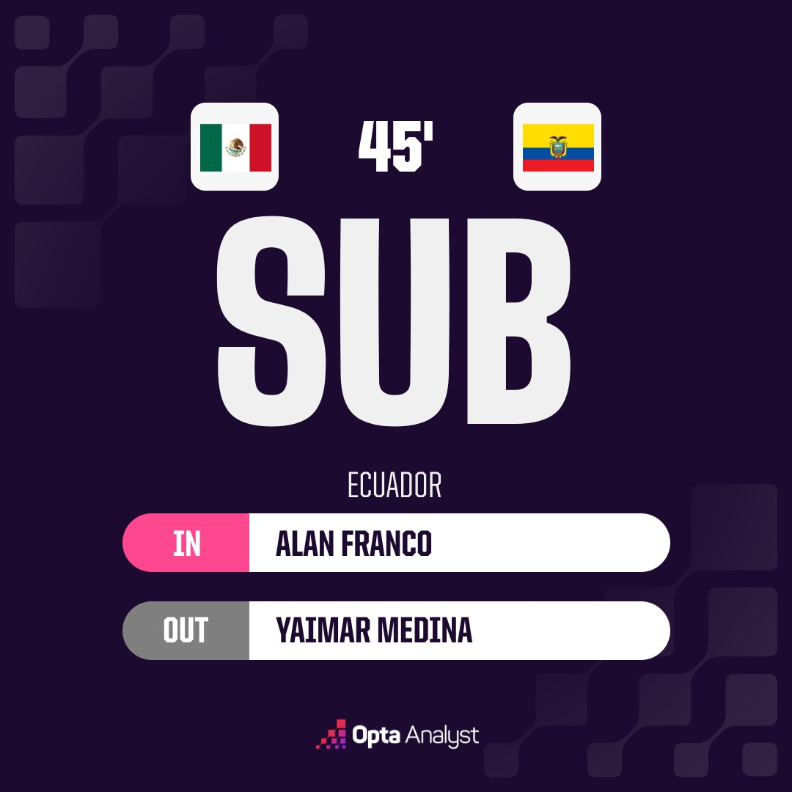
52'
Mexico are unbeaten in their last 8 FIFA World Cup matches when leading at half-time (W6, D2) dating back to 2nd June 1978 against Tunisia (L1-3).
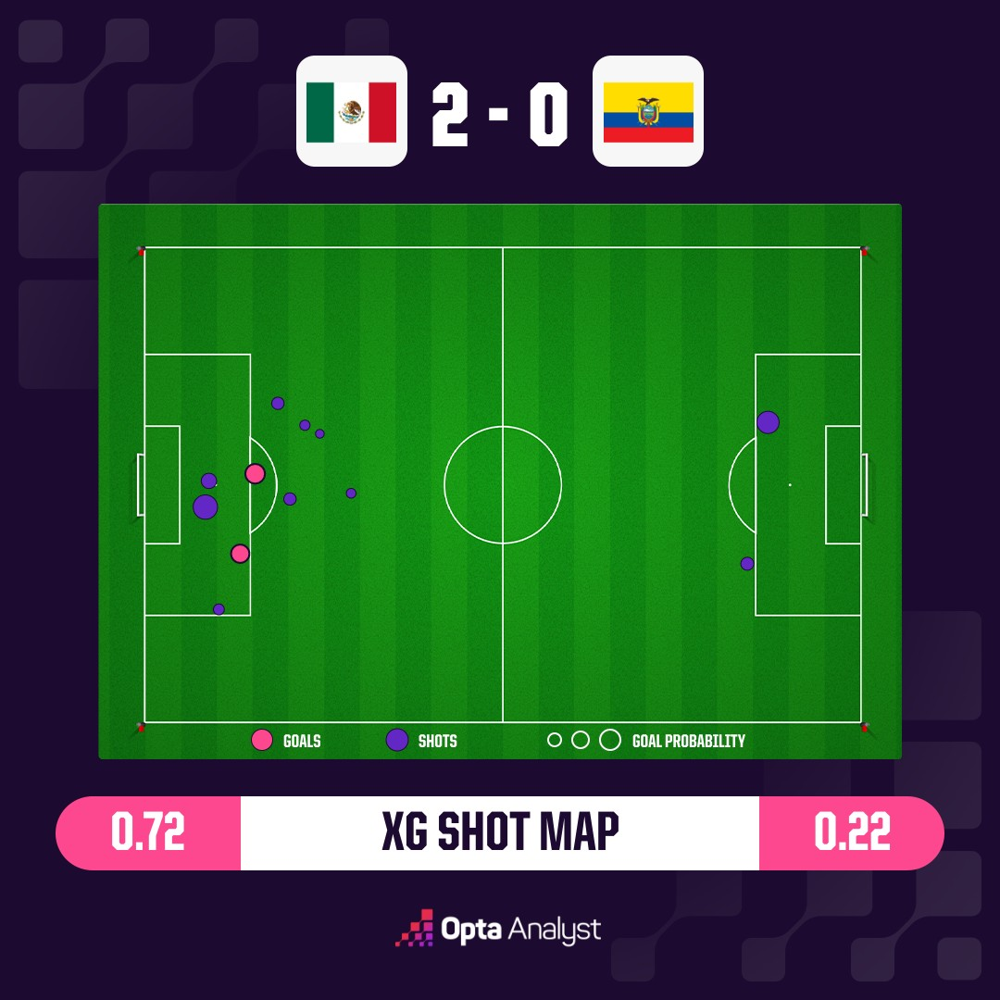
45+6'
HALF-TIME: Mexico 2-0 Ecuador. An intriguing first half comes to a close with Mexico going in ahead at the interval here at Mexico City Stadium.
45+3'
A free-kick in a dangerous position now for Ecuador, after a foul from Jesús Gallardo on John Yeboah. Can Ecuador make Mexico pay for that rashness from Jesús Gallardo?
45+1'
That is a booking for Alan Franco, who has received their first yellow card. They are not happy with the decision, but it is done now, and they will have to be careful for the rest of this game.
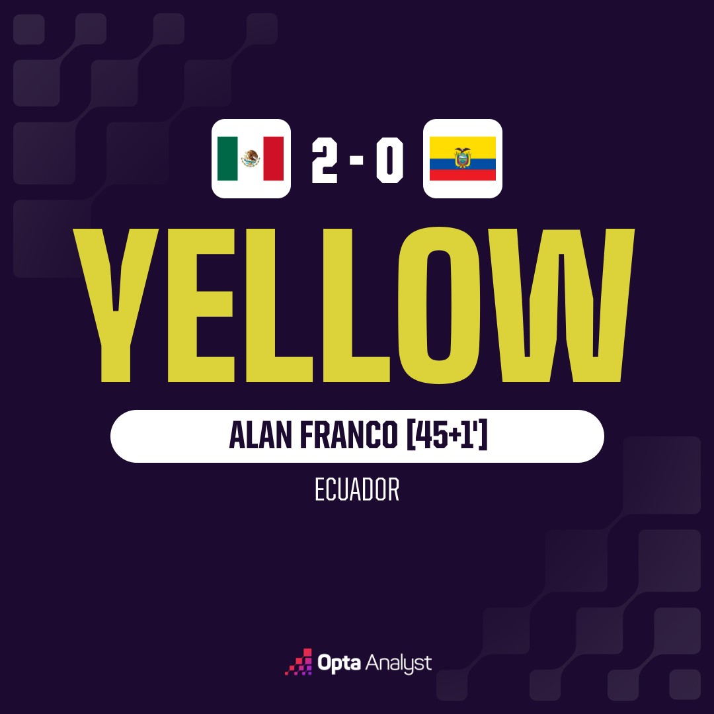
45+1'
A foul from Alan Franco on Julián Quiñones sees Mexico win a free-kick, but it is not in a dangerous position, so Ecuador should be confident they can defend it easily enough.
45+1'
MISS! The score remains 2-0, with Ecuador relieved after Mexico’s Raúl Jiménez goes for goal but sends their attempt off target. Not one to write home about, that one.
44'
No luck! Raúl Jiménez takes on a shot that, had they got it right, might have been set to test the goalkeeper, but instead it is sent off target and Ecuador come away unscathed.
40'
Corner now for Ecuador, as they see a shot from John Yeboah deflected out of play for a set-piece. Mexico have some defending to do, here. Could this result in a big opportunity?
38'
A foul from Julián Quiñones on Moisés Caicedo sees Ecuador win a free-kick, but it is not in a dangerous position, so Mexico should be confident they can defend it easily enough.
35'
Nilson Angulo goes in on Roberto Alvarado and concedes a foul. The free-kick is not in a particularly dangerous area from Ecuador’s viewpoint, though.
31'
Julián Quiñones has assisted his first goal in the 2026 FIFA World Cup.
31'
Raúl Jiménez has scored his second goal in the 2026 FIFA World Cup, netting for the first time since 11th June 2026 against South Africa.
31'
GOAL! It is 2-0 to Mexico now, with Raúl Jiménez having put them will in control. Is there any way back for Ecuador, or will Mexico see this one out with ease?
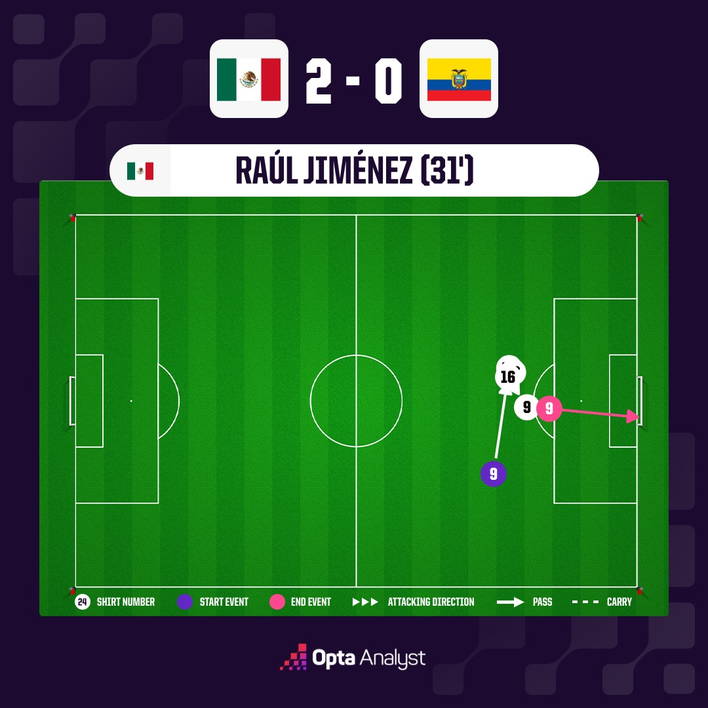
29'
A free-kick to Mexico, as Enner Valencia goes in and fouls Roberto Alvarado. However, Ecuador will not mind giving one away in this area too much, with plenty of distance to their goal.
24'
Mexico's defense is looking formidable early on, calmly and authoritatively dismantling opposition attacks.
22'
Roberto Alvarado has assisted his third goal in the 2026 FIFA World Cup.
22'
Mexico have avoided defeat in their last 6 matches when scoring first in the FIFA World Cup, since a 1-2 loss to Netherlands on 29th June 2014.
22'
Julián Quiñones has scored his third goal of the 2025 FIFA World Cup this edition, more than any other Mexico player.
22'
GOAL! Julián Quiñones scores! Mexico have the lead in this entertaining contest. There is still lots of time left for further drama, but that intervention from Julián Quiñones has put Ecuador in a difficult position. Game on!
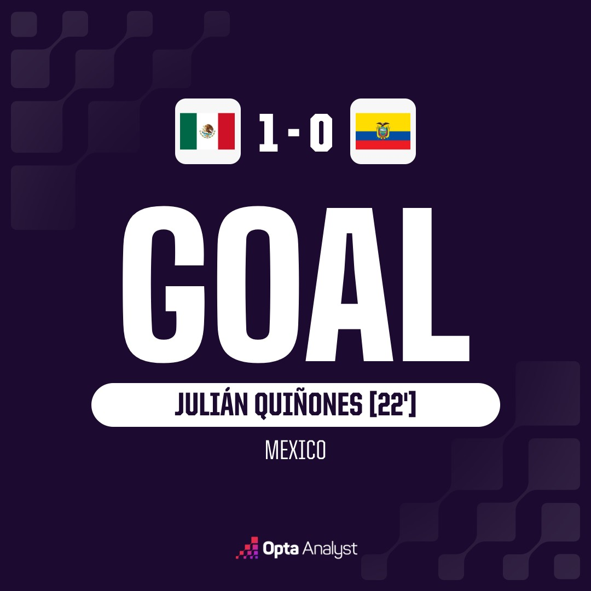
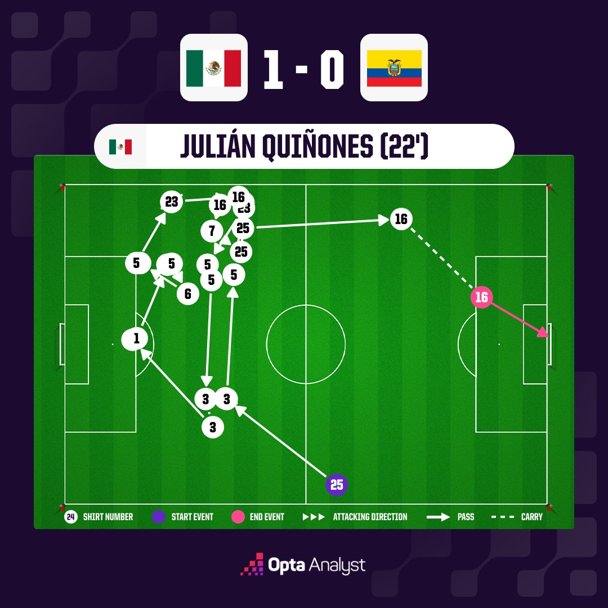
20'
A foul from Willian Pacho on Raúl Jiménez sees Mexico win a free-kick, but it is not in a dangerous position, so Ecuador should be confident they can defend it easily enough.
19'
Free-kick! A foul from Jesús Gallardo on John Yeboah. It is well away from Mexico’s goal, so it is unlikely to result in a chance for Ecuador.
15'
MISS! The score remains 0-0, with Ecuador relieved after Mexico’s Gilberto Mora goes for goal but sends their attempt off target. Not one to write home about, that one.
14'
Roberto Alvarado's effort is deflected out for a corner. Can Mexico make anything of this set-piece?
11'
Julián Quiñones goes in on Moisés Caicedo and concedes a foul. The free-kick is not in a particularly dangerous area from Mexico’s viewpoint, though.
11'
It’s been tight so far, and Mexico are making sure it stays that way with strong defensive discipline and well-timed clearances.
7'
MISS! How has that not gone in? A complete lack of composure shown from Raúl Jiménez, who squanders a golden chance for Mexico, whose coach looks on frustrated from the touchline. A real let off for Ecuador!
6'
MISS! A shot from Luis Romo ends up being off target. They might have done a bit better with that one, but it remains Mexico 0-0 Ecuador.
5'
MISS! The score remains 0-0, with Ecuador relieved after Mexico’s Gilberto Mora goes for goal but sends their attempt off target. Not one to write home about, that one.
5'
A free-kick to Mexico, as Enner Valencia goes in and fouls Érik Lira. However, Ecuador will not mind giving one away in this area too much, with plenty of distance to their goal.
4'
BLOCKED! That was close. Roberto Alvarado got off a shot, which was heading in, but Joel Ordoñez was on hand to make a vital intervention. Great block!
2'
Roberto Alvarado goes in on Gonzalo Plata and concedes a foul. The free-kick is not in a particularly dangerous area from Mexico’s viewpoint, though.
1'
Kick-off! Up and running at Mexico City Stadium, with Mexico getting the ball rolling. Who will come out on top?
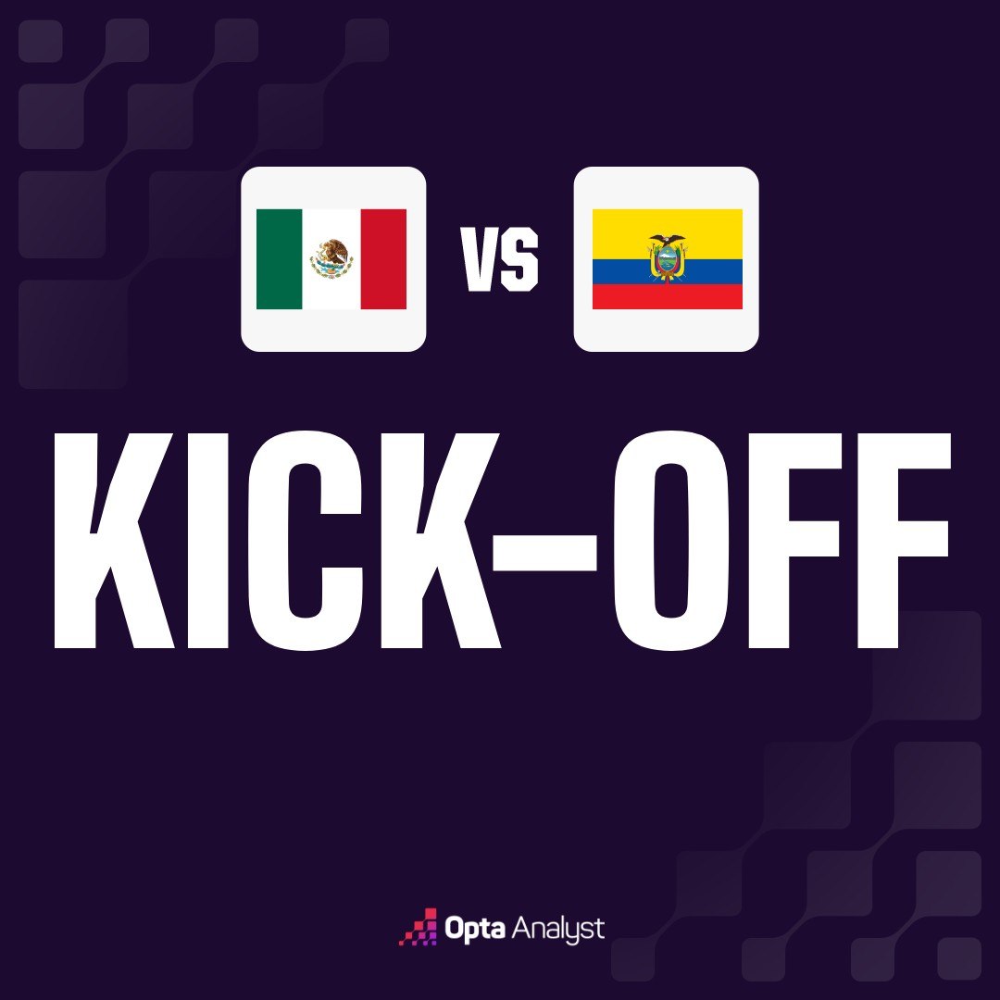
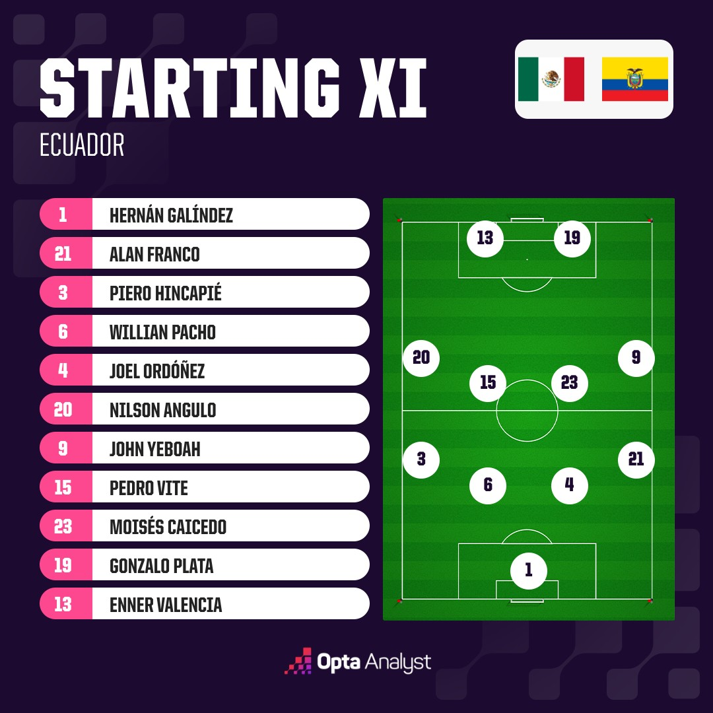
Mexico have won their last 6 matches in a row
Mexico have kept a clean sheet in the last 5 home matches
There have been fewer than 3 goals scored in total in each of Mexico's last 5 home games
Mexico have kept a clean sheet in the last 3 matches
There have been fewer than 3 goals scored in total in each of Ecuador's last 10 away games
Mexico will be bidding to extend their FIFA World Cup winning streak when they face Ecuador for Tuesday's Round of 32 clash at Mexico City Stadium.
Mexico's last group stage match saw them triumph 3-0 over Czechia on June 24. Mateo Chávez, Julián Quiñones, and Álvaro Fidalgo netted in the win. They are undefeated in their last 11 games in all competitions.
Ecuador won for the first time in the competition this year in their last group stage game on June 25, beating Germany 2-1 at New York New Jersey Stadium. Nilson Angulo and Gonzalo Plata scored in the win. In 2026, they have won three, drawn three, and lost one.
Mexico finished first in their group on nine points, while Ecuador's four points placed them third.
The last meeting between the sides, a friendly at Estadio Guadalajara last October, ended in a 1-1 draw. Germán Berterame scored Mexico's lone goal in the third minute. Jordy Alcívar scored for the Ecuadorean side in the 20th minute with a penalty.
Ecuador have got the better of Mexico of late, unbeaten in their last four matches. Mexico are looking for their first win in games between the two sides since June 2019. The Ecuadorean side have outscored the Mexican side 4-3 during their unbeaten streak.
Quiñones has caught the eye for Mexico in World Cup play. He leads the team with two goals, one of which has been the crucial first of the match. Ecuador's leading players in the final third have been Angulo and Plata, who have each netted once in the current World Cup campaign.
The Mexican side have scored in each of their three World Cup contests this season. Mexico have been similarly effective at protecting their own goal, as they haven't allowed a goal in World Cup play this season.
Mexico have won each of their last six matches in all competitions. The Mexican side scored 14 and conceded one in that stretch, scoring first in five of the six contests. They had five first-half goals, while their opponents netted once in the first 45 minutes. The Ecuadorean side have won three, drawn two and lost one in their last six. The Ecuadorean side scored eight and conceded four over that period, netting first in two of the six. They had four goals in the first half, while their opponents netted two times before the break.
-
General
Possession 42.8% 42.83857.16257.2% Possession lost in defensive half 31 313333 Possession lost in middle third 40 403737 Duels 99 999999 Duels success rate 52.5% 52.52544.44444.4% Aerial duels 38 383838 Aerial duels won 60.5% 60.52639.47439.5% Successful dribbles 6 688 Fouls won 14 141010 Offsides 0 011 Corner awarded 3 388 -
Distribution
Passes 316 316410410 Long passes 58 585353 Long passes proportion (%) 18.4% 18.35412.92712.9% Passing accuracy 78.5% 78.48183.17183.2% Passes in opponents' half 184 184251251 Passing accuracy in opponents' half (%) 70.1% 70.10978.08878.1% Total passes in the final third 103 103133133 Passing accuracy in final third (%) 58.3% 58.25267.66967.7% Forward passes 212 212252252 Forward passes (%) 67.1% 67.08961.46361.5% Through balls 1 111 Final third entries 58 587272 Penalty area entries 13 133636 Total open play crosses 4 41919 Crosses 7 72525 Crossing accuracy 57.1% 57.1431212.0% -
Attack
Goals 2 200 Shots 15 1577 Shots on target 3 311 Blocked shots 3 311 Headed shots 4 411 Shots outside the box 5 522 Shots inside the box 10 1055 Shots accuracy excluding blocked shots 25.0% 2516.66716.7% Shooting accuracy 20.0% 2014.28614.3% Key Passes 14 1466 -
Defence
Tackles 10 101111 Tackles success rate 50.0% 5072.72772.7% Clearances 39 391919 Interceptions 7 766 Recoveries 35 353434 Attacking third recovery 2 200 Defensive third recovery 16 162323 Midfield third recovery 17 171111 Recoveries in attacking half (%) 5.7% 5.71400.0% -
Discipline
Fouls conceded 10 101414 Yellow cards 0 033 Red cards 0 011